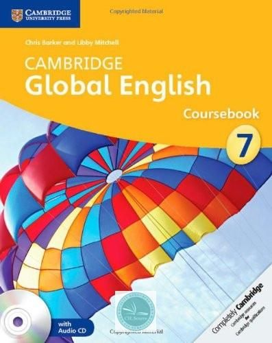

Price: $36.32
Customers Ratings: 5.0 (115 Reviews)
Product description
Cambridge Global English Stages 7-9 follow the Cambridge Lower Secondary English as a Second Language (ESL) Curriculum Framework.
Coursebook 7 is organised into eighteen thematic units of study based on the Cambridge International English Scheme of Work for
Stage 7. The topics and situations in Cambridge Global English have been selected to reflect this diversity and encourage learning
about each other's lives through the medium of English. It presents realistic listening, speaking, reading and writing tasks, as
well as end-of-unit projects similar to those students might encounter in the context of a first-language school. After every
other unit, there is a literature spread, featuring authentic texts from a variety of sources. CEFR Level - B1
Customers who viewed this item also viewed
- Cambridge Global English Workbook Stage 7
$23.30
- Cambridge Global English Workbook Stage 8
$23.30
- Cambridge Global English Teachers Resource Stage 7
$40.50